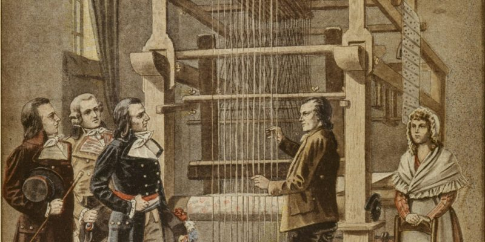
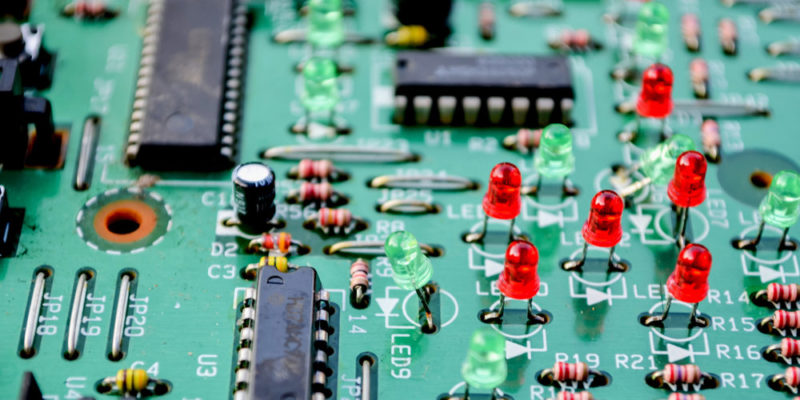
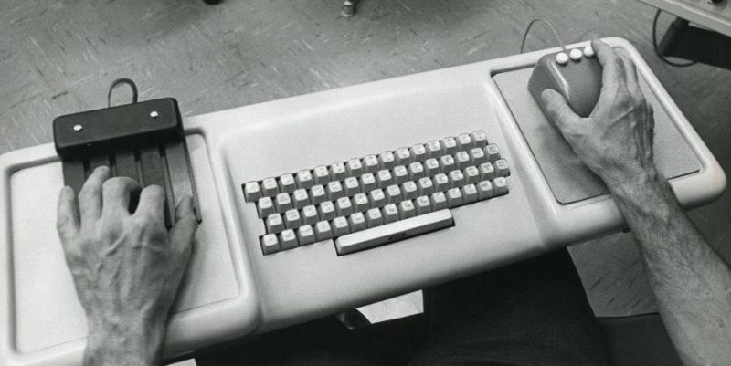
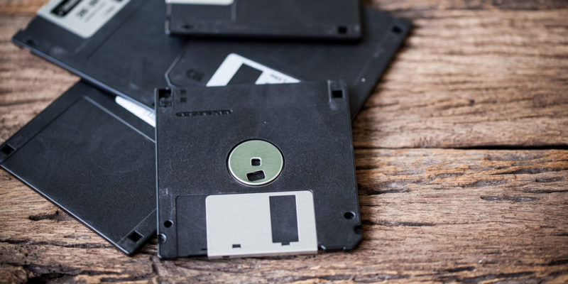
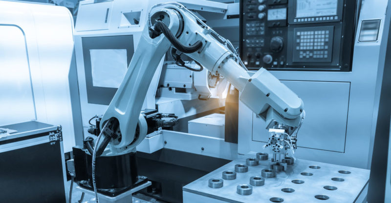

Historia de la Computadora
 La computadora es la máquina de cálculo más avanzada y eficiente inventada.
La computadora es la máquina de cálculo más avanzada y eficiente inventada.
La historia de la computadora es el recuento de los eventos, innovaciones y desarrollos
tecnológicos del campo de la
informática y la automatización, que dieron origen a las máquinas que conocemos como computadoras,
computadores u
ordenadores. Registra además su mejoramiento y actualización hasta alcanzar las versiones miniaturizadas y
veloces
del siglo XXI.
Las computadoras, como todos sabemos, son las máquinas de cálculo más avanzadas y eficientes
inventadas por el ser
humano. Están dotadas del suficiente poder de operaciones, la suficiente autonomía y velocidad como para
reemplazarlo en muchas tareas, o permitirle dinámicas de trabajo virtuales y digitales que nunca
antes en la
historia habían sido posibles.
La invención de este tipo de aparatos en el siglo XX revolucionó para siempre la manera en que entendemos los
procesos industriales, el trabajo, la sociedad y un sinfín de otras áreas de nuestra vida. Afecta desde el
modo
mismo de relacionarnos, hasta el tipo de operaciones de intercambio de información a escala mundial que
somos
capaces de realizar.
Antecedentes de la computadora

Joseph Marie Jacquard inventó en 1802 un sistema de tarjetas perforadas.
La historia de la computadora tiene largos antecedentes, que se remontan a las primeras reglas de
cálculo y a las
primeras máquinas diseñadas para facilitarle al ser humano la tarea de la aritmética. El ábaco, por
ejemplo, fue un
importante adelanto en la materia, creado alrededor de 4.000 a. C.
También hubo inventos muy posteriores, como la máquina de Blaise Pascal, conocida como Máquina de Pascal o
Pascalina, creada en 1642. Consistía en una serie de engranajes que permitían realizar operaciones
aritméticas. Esta
máquina fue mejorada por Gottfried Leibinitz en 1671 y se dio inicio a la historia de las
calculadoras.
Los intentos del ser humano por automatizar continuaron desde entonces: Joseph Marie Jacquard
inventó en 1802 un
sistema de tarjetas perforadas para intentar automatizar sus telares, y en 1822 el inglés Charles Babbage
empleó
dichas tarjetas para crear una máquina de cálculo diferencial.
Solamente doce años después (1834), logró innovar su máquina y obtener una máquina analítica capaz de las
cuatro
operaciones aritméticas y de almacenar números en una memoria (hasta 1.000 números de 50 dígitos).
Por este motivo,
a Babbage se le considera el padre de la computación, ya que esta máquina representa un salto hacia el mundo
de la
informática como lo conocemos.
Invención de la computadora
invención de la computadora no puede atribuirse a una sola persona. Se considera a Babbage como el padre de
la
rama de saberes que luego será la computación, pero no será sino hasta mucho más adelante que se hará la
primera
computadora como tal.
Otro importante fundador en este proceso fue Alan Turing, creador de una máquina capaz de calcular cualquier
cosa, y
que llamó “máquina universal” o “máquina de Turing”. Las ideas que sirvieron para construirla fueron las
mismas que
luego dieron nacimiento al primer computador.
Otro importante caso fue el de ENIAC (Electronic Numeral Integrator and Calculator, o sea, Integrador y
Calculador
Electrónico Numeral), creado por dos profesores de la universidad de Pensilvania en 1943, considerado el
abuelo de
los computadores propiamente dicho. Consistía en 18.000 tubos al vacío que llenaban un cuarto entero.
Invención de los transistores

Los transistores fueron fundamentales para la fabricación de los primeros microchips
La historia de los computadores no habría tenido el curso que tuvo sin la invención en 1947 de los
transistores,
fruto de los esfuerzos de los laboratorios Bell en Estados Unidos. Estos aparatos son interruptores
eléctricos
fabricados con materiales sólidos y sin necesidad del vacío.
Este descubrimiento fue fundamental para la fabricación de los primeros microchips, y permitieron el paso de
los
aparatos eléctricos a los electrónicos. Los primeros circuitos integrados (o sea, chips) aparecieron en
1958, fruto
de los esfuerzos de Jack Kilby y Robert Noyce. El primero recibió el Premio Nobel de Física en 2000 por el
hallazgo.
El primer computador
 La Z3 fue la primera computadora electrónica alemana.
La Z3 fue la primera computadora electrónica alemana.
Los primeros computadores surgieron como máquinas de cálculo lógico, debido a las
necesidades de los aliados durante
la Segunda Guerra Mundial. Para decodificar las transmisiones de los bandos en guerra debían hacerse
cálculos rápido
y constantemente.
Por eso, la Universidad de Harvard diseñó en 1944 la primera computadora electromecánica, con ayuda de IBM,
bautizada Mark I. Ocupaba unos 15 metros de largo y 2,5 de alto, envuelta en una caja de vidrio y acero
inoxidable.
Contaba con 760.000 piezas, 800 kilómetros de cables y 420 interruptores de control. Prestó servicios
durante 16
años.
Al mismo tiempo, en Alemania, se había desarrollado la Z1 y Z2, modelos de prueba de computadores similares
construidos por Konrad Zuse, quien completó su modelo Z3 totalmente operacional, basado en el sistema
binario. Era
más pequeño y de más barata construcción que su competidor estadounidense.
La primera computadora de uso comercial
En febrero de 1951 apareció la Ferranti Mark 1, una versión moderna de la computadora norteamericana del
mismo
nombre que estaba disponible comercialmente. Fue sumamente importante en la historia del computador, pues
contaba
con un índice de registros, que permitía la lectura más fácil de un conjunto de palabras en la memoria.
Por esa razón surgieron hasta treinta y cuatro patentes distintas de su desarrollo. En los años posteriores
sirvió
de base para la construcción de las computadoras IBM, muy exitosas industrial y comercialmente.
El primer lenguaje de programación
 El lenguaje FORTRAN se desarrolló para el computador IBM 704.
El lenguaje FORTRAN se desarrolló para el computador IBM 704.
En 1953 apareció FORTRAN, acrónimo
de The IBM Mathematical Formula Translation (“Traducción de fórmulas matemáticas
de IBM”), desarrollado como el primer lenguaje formal de programación, o sea, el primer programa diseñado para
fabricar programas computacionales, por los programadores de IBM, liderados por John Backus.
Inicialmente se desarrolló para el computador IBM 704, y para una variada gama de aplicaciones científicas y de
ingeniería, razón por la cual tuvo una amplia serie de versiones a lo largo de medio siglo de implementación. Es
todavía uno de los dos lenguajes de programación más populares, especialmente para los supercomputadores del
mundo.
La primera computadora moderna

Engelbart inventó el ratón (mouse) y la interfaz gráfica de usuario.
La primera computadora moderna apareció en otoño de 1968, como un prototipo presentado por Douglas Engelbart.
Tenía
por primera vez un ratón o puntero, y una interfaz gráfica de usuario (GUI), cambiando para siempre el modo en
que
los usuarios y los sistemas computarizados interactuarían en adelante.
La presentación del prototipo de Engelbart duró 90 minutos e incluyó una conexión en pantalla con su centro de
investigación, constituyendo así la primera videoconferencia de la historia. Los modelos de Apple y luego de
Windows
fueron versiones posteriores de este primer prototipo.
Dispositivos de almacenamiento secundario

Los disquetes de 3 ½ pulgadas eran rígidos, de colores y mucho más pequeños.
El primer dispositivo de intercambio de información entre un computador y otro fueron los disquetes Floppy,
creados
en 1971 por IBM. Se trataba de cuadrados negros de plástico flexible, en el medio de los cuales había un
material
magnetizable que permitía grabar y recuperar información. Hubo varios tipos de disquetes:
- 8 pulgadas. Los primeros en aparecer, voluminosos y con capacidad entre 79 y 512 kbytes.
- 5 ¼ pulgadas. Semejantes a los de 8 pulgadas pero más pequeños, almacenaban entre 89 y 360 kbytes.
- 3 ½ pulgadas. Introducidos en la década de los 80, eran rígidos, de colores y mucho más pequeños, con una
capacidad
de entre 720 y 1440 kbytes.
También hubo versiones de alta y baja densidad, y numerosas variantes de casetes. A finales de los 80, la
aparición
y masificación del disco compacto (CD) reemplazó totalmente el formato, aumentando la velocidad y capacidad de
recuperación de datos.
Finalmente, en el cambio de siglo, todos estos formados de dispositivo se hicieron obsoletos y fueron
reemplazados
por el pendrive o memoria flash removible, de capacidad variada (pero muy superior), alta velocidad y
portatilidad
extrema.
Las primeras redes informáticas
La primera red de computadores del mundo fue ARPANET, creada en 1968 por el Departamento de Defensa de los
Estados
Unidos. Sirvió de plataforma rápida de intercambio de información entre instituciones educativas y estatales,
con
fines probablemente militares.
Esta red se desarrolló, actualizó y eventualmente se convirtió en la columna vertebral de Internet, abierta ya al
público en general, al menos hasta 1990.
Computadoras del siglo XXI

El surgimiento de la robótica promete dejar sin empleo a muchos trabajadores.
Las computadoras hoy son parte de la vida cotidiana, a punto tal que para muchos es inconcebible ya un mundo sin
ellas. Se las encuentra en nuestras oficinas, en nuestros teléfonos celulares, en diversos electrodomésticos, a
cargo de instalaciones automatizadas, y desempeñando un sinfín de operaciones de manera automática e
independiente.
Esto tiene muchos aspectos positivos, pero también entraña muchos temores. Por ejemplo, el surgimiento de la
robótica, paso siguiente natural de la computación, promete dejar sin empleo a muchos trabajadores humanos,
superados por la capacidad de automatización que cada día es mayor y más rápida.